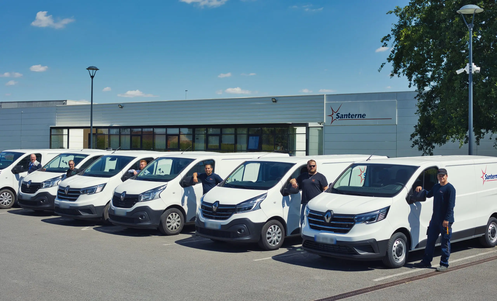

À propos de moi
26 ans, 7 ans d'expériences professionnelle.Sérieux, Mature, Studieux, Investi.

Apprentissage chez Santerne
Je suis actuellement en apprentissage chez Santerne Défense
en tant qu'Administrateur système et réseau.
Je m'occupe de la plateforme de test et je me déplace
aussi dans toute la france et DOM/TOM pour la MCO/MCS de bases militaire.
Je suis ammené à me déplacer sur différents sites pour effectuer la maintenance.
Voici divers projets auquels j'ai participé :
- Migration du serveur et système de Vidéosurveillance, durcissement GPO, création de régles IPS, et MCO/MCS dans 2 bases militaires en Guyane.
- Renouvellement de certificats sur divers équipements et serveurs manuellement en Normandie.
- Installation de nouveaux serveurs antivirus dans divers bases du grand est.
L'informatique
L'informatique n'a pas toujours été une passion à vrai dire. C'est grâce à une formation que j'ai
effectué à Actif-CNT que celle-ci en est devenue une. Aujourd'hui j'aime manipuler, chercher,
comprendre et toujours apprendre plus de choses.
Je possède mon propre HomeLab, ce qui me permet même chez moi ou ailleur via VPN, de tester divers
solutions, et de continuer à pratiquer ma passion.

Mes compétences
Grâce à ma formation en bac+3 en apprentissage chez Santerne Défense et à une curiosité pour l'informatique en général, j'ai développé des compétences en réseau, administration serveur Windows et Linux et en gestion de projet.Je souhaite bien évidemment continuer mes études en informatique pour approfondir ces connaissances dans le but d'obtenir le diplôme Mastère professionnel : Manager en infrastructures et cybersécurité des SI au Cesi d'Arras en apprentissage.
Réseau
- Administration de switch de routeurs et de firewalls.
- Layer 4 : Stormshield, VPN IPSec/SSL, IPS/IDS (surveillance, détection d’intrusion).
- Layer 3 : OSPF, BGP, EIGRP, HSRP, Routage intervlans.
- Layer 2 : STP(Spanning tree), VLANS.
Administration Windows server
- Rôles ADDS, DHCP, WDS/MDT, WSUS, DFS/R,DNS, GPO.
Administration Linux server
- DOCKER, APACHE2, NGINX, BIND9, SAMBA, OPENSSL.
Cybersecurité
- Serveur Radius, ADCS.
- 802.1x, ACL.
Mes etudes / experiences pro
Voici mon parcours avec les différentes études et expériences professionelles que j'ai effectué.
CESI Arras
Ecole d'ingénieurs - 2022-2025Actif CNT Valenciennes
BAC PRO Technicien de maintenance en micro-informatique - 2018 - 2020Lycée Ambroise Croizat Auby
AED TICE - 2020-2022Auchan SAV
Apprentissage effectué dans cette entreprise pendant la formation TMI à ACTIF-CNT Valenciennes - Technicien informatique - 2018-2020Mairie de Douai
Apprentissage effectué dans cette entreprise pendant la formation GMSI au CESI Arras - Technicien informatique - 2022-2024Santerne Défense
Apprentissage effectué dans cette entreprise pendant la formation ASR au CESI Arras - Administrateur système et réseau - 2024-2025Contact
Voici un lien vers mon cv que vous pourrez télécharger en pdf en bas de page : CV MARTIN Nicolas
Si mon profil vous intéresse contactez moi ci-dessous :